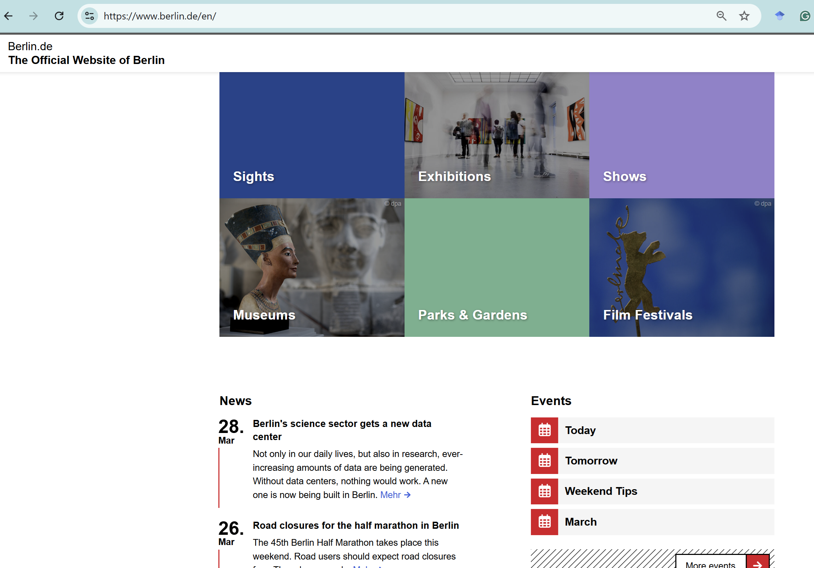

Task Overview
Visit the Berlin website and analyse the Events section. Your task is to redesign this interface using the Figma concepts learned this week.
Open Berlin Website
Reference UI (Events Section)
Use the following layout as inspiration for your redesign:

Step 1: Analyse the Design
- Identify layout structure (grid, columns, spacing)
- Observe hierarchy between News and Events
- Note typography, alignment, and spacing issues
- Identify usability or visual problems
Step 2: Recreate Using Frames & Layers
- Create a main frame (Desktop 1440px)
- Divide layout into sections (News / Events)
- Use frames to group related content
- Organize layers clearly with meaningful names
Step 3: Apply Constraints
- Ensure elements resize properly
- Set text and containers to scale or stay fixed
- Test responsiveness by resizing the frame
Step 4: Use Auto Layout
- Apply Auto Layout to event lists
- Create vertical spacing consistency
- Ensure dynamic resizing for content blocks
Step 5: Improve the Design
- Improve visual hierarchy
- Reduce clutter and improve spacing
- Enhance readability and alignment
- Use consistent colors and typography
Deliverables
- Redesigned Figma frame
- Well-structured layers panel
- Use of Auto Layout and constraints
- Short explanation (3–4 points) of improvements